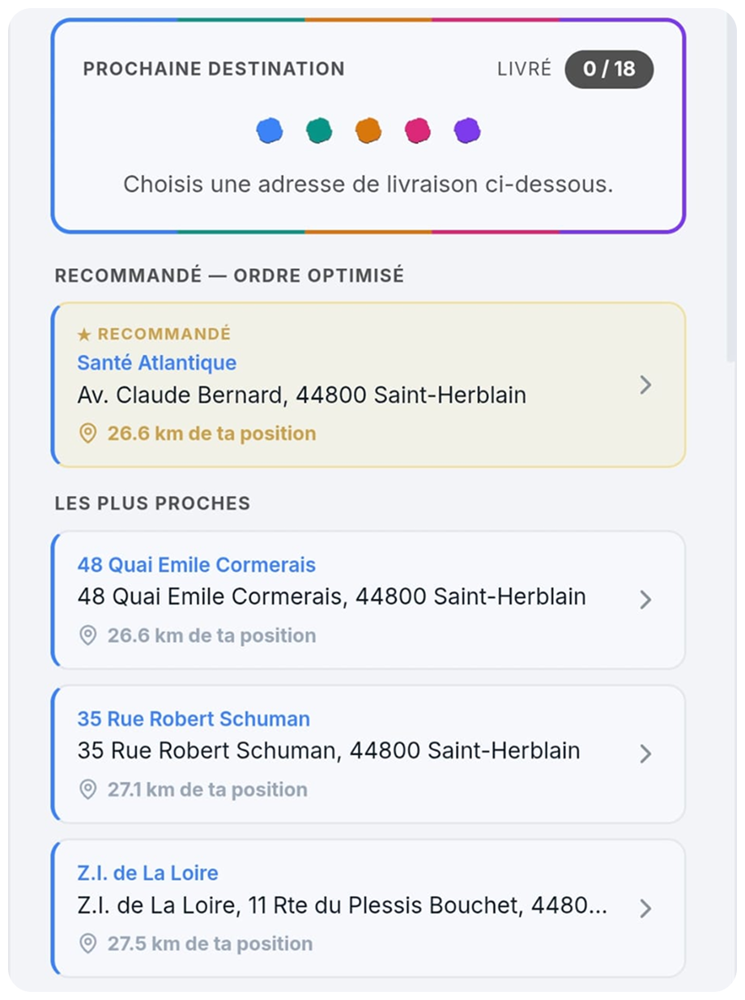

Des kilomètres en moins
L'ordre de passage est calculé sur routes réelles, pas à vol d'oiseau. Sur une tournée de 28 arrêts, ce sont environ 21 minutes récupérées.
Ordre de saisie42 km
Ordre optimisé31 km
ATEQO optimise tes tournées en quelques secondes. Gagne du temps, économise du carburant et choisis librement ton prochain arrêt.
En un coup d'œil
Quatre outils qui portent toute la tournée. Le reste vient ensuite.
À chaque arrêt, la destination recommandée et les arrêts les plus proches. Tu gardes toujours la main.
Sur des zones étendues, ATEQO calcule l'ordre le plus efficace secteur par secteur.
Scanne l'étiquette ou dicte l'adresse, les mains dans les colis. Elle part dans la tournée.
L'ordre de chargement s'affiche inversé : le dernier colis livré est le premier chargé.
Ce que tu gagnes
ATEQO optimise, tu choisis. Le calcul travaille pour toi, la décision reste la tienne.
L'ordre de passage est calculé sur routes réelles, pas à vol d'oiseau. Sur une tournée de 28 arrêts, ce sont environ 21 minutes récupérées.
Moins de détours, plus d'aller-retours inutiles entre deux zones. Le gain roule tous les jours, pas seulement le premier.
Tes adresses arrivent dans le désordre, tu les saisis dans le désordre. Le classement, c'est l'app qui s'en charge.
L'ordre optimisé est une recommandation, jamais une contrainte. Un imprévu, un client absent : tu choisis un autre arrêt, le guidage suit.
Tes 7 premières tournées sont sans aucune limite, sans moyen de paiement à renseigner. Tu juges sur ta propre tournée.
Comment ça marche
De la première adresse saisie au dernier colis livré, dans l'ordre où ça se passe vraiment.
Au clavier, à la voix les mains dans les colis, ou en scannant l'étiquette. L'adresse est extraite et ajoutée à la tournée.
Tu travailles sur des zones étendues ? Regroupe tes adresses par secteur géographique. Chacun a sa couleur et son ordre de passage.

Un clic. ATEQO calcule l'ordre le plus efficace, secteur par secteur, et affiche le temps gagné directement sur la carte.
L'ordre de chargement s'affiche inversé, adresse par adresse : le dernier colis livré est le premier chargé. Plus de colis à déterrer.
Google Maps s'ouvre pour chaque arrêt. À chaque livraison, ATEQO propose la destination recommandée et les arrêts les plus proches.

Ce qui est inclus
Tout ce dont tu as besoin en tournée, rien de superflu.
Scanne l'étiquette d'un colis, l'adresse est ajoutée automatiquement à ta tournée.
Dicte l'adresse au lieu de la taper. Reconnaissance intégrée au téléphone, sans surcoût.
Code d'accès, étage, créneau : la note reste visible pendant toute la tournée.
Tu gères plusieurs tournées ? Enregistre tes adresses et tes circuits habituels pour les retrouver et les réoptimiser chaque jour.
Connecte ton téléphone à ton véhicule, lance ta destination depuis ATEQO et laisse-toi guider par ton GPS habituel.
ATEQO t'accompagne dans le chargement de ton utilitaire, adresse par adresse, en respectant la logique de rangement.
Retrouve une tournée passée et rejoue-la à l'identique, sans tout ressaisir.
Un signal quand tu approches d'un arrêt, sans avoir à quitter la route des yeux.
Sur toutes les formules, sans exception. L'app ne vit pas de ton attention.
Pour qui
Conçu pour les tournées à nombreux arrêts, utile à tout trajet multi-arrêts.
Cent arrêts et une plage horaire serrée : les secteurs découpent la zone, l'optimisation fait le reste.
Chaque kilomètre évité est de la marge conservée. C'est ton véhicule et ton carburant.
Les courses tombent en cours de journée. Ajoute un arrêt en pleine tournée, l'ordre se recalcule.
L'ordre recommandé n'est jamais imposé : un plat qui refroidit passe devant, tu décides.
Les interventions de la journée classées par zone, avec le code d'accès noté sur chaque adresse.
Une tournée qui se répète chaque jour : enregistre-la en circuit récurrent et retrouve-la au matin.
Tu livres toi-même tes commandes : une tournée propre en quelques minutes, sans logiciel de flotte.
Tarifs
Commence gratuitement. Passe Premium quand tu roules tous les jours.
Pour découvrir ATEQO sans engagement.
Tes 7 premières tournées sans aucune limite
14 jours d'essai gratuit, sans engagement
soit ~14,17 € / mois, moins cher que le mensuel
14 jours d'essai gratuit, sans engagement
Ta première tournée optimisée en moins d'une minute.